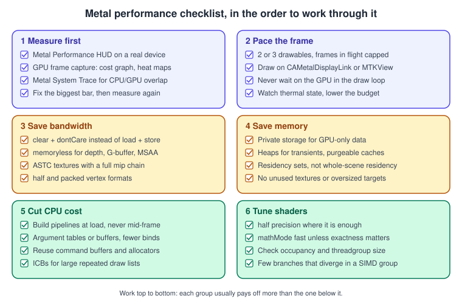
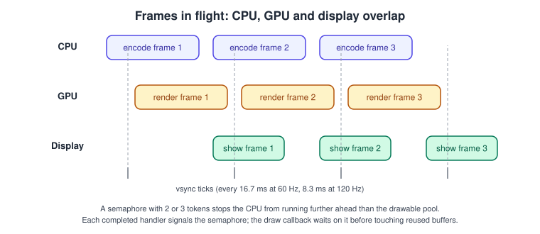
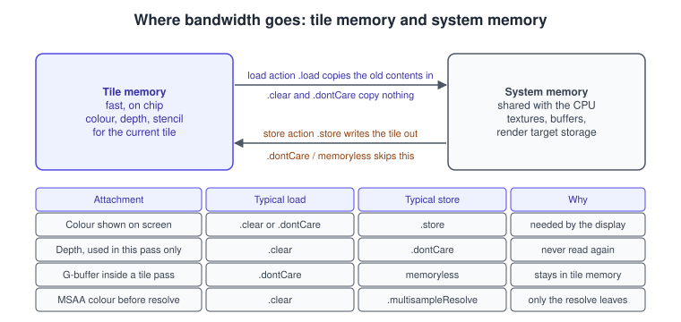

Performance Best Practices
|
This content was generated with the assistance of AI and should be verified against the official documentation before being relied on in production. |
A Metal renderer is usually slow for one of three reasons: the GPU moves more memory than the frame budget allows, the CPU cannot encode the frame fast enough, or the two wait on each other. This page is a checklist for finding which one it is and a set of changes that fix each. It is deliberately practical: every section ends in code or a setting you can try today.
The facts were checked in November 2026. The versions documented are Metal 4 on the 26 operating systems and the 27 releases with Xcode 27 and MSL 4.1; nearly all advice applies to Metal 3 as well, and where Metal 4 changes the advice the text says so. The recommendations assume Apple silicon (iPhone and iPad with A14 or later, Macs with M1 or later and Apple Vision Pro), where the GPU is a tile-based deferred renderer sharing memory with the CPU; see GPU Architecture and TBDR for the model behind them.
In the running example this is the step after the Bookshelf is complete: the book-sorting game runs at the display refresh rate on a recent iPhone, and the work here is about keeping it there on a three-year-old one without the device getting hot.
The checklist

The order matters. A shader tweak is invisible if the frame is paced badly, and pacing is irrelevant if you cannot measure it. The sections below follow the figure.
1 Measure first
Never optimise from intuition. Metal gives you three levels of measurement, from cheapest to richest:
-
Metal Performance HUD. An overlay that shows frame rate, frame time and GPU time while the app runs, on a real device. It is enabled with the environment variable
MTL_HUD_ENABLED=1, with aMetalHudEnabledkey in the app’sInfo.plist, or in Xcode with the Show Graphics Overview option of the scheme. An app can also configure the HUD per layer through thedeveloperHUDPropertiesdictionary of itsCAMetalLayer. Leave it on during development so every regression is visible. -
GPU frame capture in Xcode. It shows per-pass and per-draw cost, a shader cost graph and heat maps, and the memory view with an Unused filter. Use it to find which pass or which shader dominates.
-
Metal System Trace in Instruments. It shows the CPU and GPU timelines together, so you can see whether the GPU is idle waiting for the CPU, or the other way round.
The tools are covered in detail in Debugging and Profiling, and general profiling in Performance and Instruments and Performance and Profiling. The questions to answer before changing code:
| Symptom | Likely cause | First thing to check |
|---|---|---|
GPU time above the frame budget |
Too much fragment work, too much bandwidth or an expensive pass |
Shader cost graph; load and store actions; render target sizes |
GPU time low, frame time high |
The CPU encodes too slowly or waits on a semaphore |
System Trace CPU lane; time spent in |
Frame time uneven although the average is fine |
Frame pacing: drawable pool, vsync alignment, a stall once a second |
Present timing; pipeline compilation or resource creation in the frame |
Fast at first, slow after a minute |
Thermal throttling |
|
2 Pace the frame
A frame has a budget: 16.7 ms at 60 Hz and 8.3 ms at 120 Hz. The CPU encodes the next frame while the GPU renders the previous one and the display shows the one before that. That overlap, called frames in flight, hides latency, and it is limited by how many drawables the layer has and how many sets of per-frame resources you keep.

Drawables and the pool
CAMetalLayer owns a pool of drawables. maximumDrawableCount can be 2 or 3 (any other value raises an exception); the
default is 3. Two drawables lower latency at the risk of stalls when a frame runs long; three smooth over occasional spikes
at the cost of one more frame of latency. nextDrawable() blocks until a drawable is free, so ask for it as late as possible,
right before you encode the pass that writes to it, not at the start of the frame. MTKView does this for you through
currentDrawable and currentRenderPassDescriptor; both are valid only inside the draw callback. Three related properties:
| Setting | Effect |
|---|---|
|
Size of the drawable pool. Default 3. |
|
When true (the default), |
|
Turns vertical sync on or off. Off gives tearing and a higher frame rate; use it only for benchmarking. |
|
The refresh rate the view targets; set it to what the game can hold, not to the display maximum. |
|
Switch between a continuous loop and draw-on-demand. Use draw-on-demand for apps that do not animate every frame. |
Frames in flight and the semaphore
Per-frame data written by the CPU and read by the GPU (uniforms, dynamic vertex data) must exist once per frame in flight. If you reuse a single buffer, the CPU overwrites it while the GPU still reads it. The standard solution is a ring of buffers guarded by a counting semaphore:
import MetalKit
import simd
struct FrameUniforms {
var time: Float
var viewProjection: simd_float4x4
}
final class PacedRenderer: NSObject, MTKViewDelegate {
static let framesInFlight = 3
private let device: MTLDevice
private let queue: MTLCommandQueue
private let inFlight = DispatchSemaphore(value: PacedRenderer.framesInFlight)
private var uniformBuffers: [MTLBuffer] = []
private var frameIndex = 0
private let startTime = CACurrentMediaTime()
init?(view: MTKView) {
guard let device = MTLCreateSystemDefaultDevice(),
let queue = device.makeCommandQueue() else { return nil }
self.device = device
self.queue = queue
view.device = device
view.colorPixelFormat = .bgra8Unorm_srgb
view.preferredFramesPerSecond = 60
for _ in 0..<Self.framesInFlight {
guard let buffer = device.makeBuffer(length: MemoryLayout<FrameUniforms>.stride,
options: .storageModeShared) else { return nil }
buffer.label = "Frame uniforms"
uniformBuffers.append(buffer)
}
super.init()
}
func mtkView(_ view: MTKView, drawableSizeWillChange size: CGSize) {}
func draw(in view: MTKView) {
// 1. Wait until the GPU has finished with the oldest frame in flight.
inFlight.wait()
guard let commandBuffer = queue.makeCommandBuffer(),
let pass = view.currentRenderPassDescriptor,
let drawable = view.currentDrawable else {
inFlight.signal() // do not leak a token when we skip the frame
return
}
// 2. Signal when this frame has finished on the GPU.
let semaphore = inFlight
commandBuffer.addCompletedHandler { _ in semaphore.signal() }
// 3. Write this frame's uniforms into its own buffer.
frameIndex = (frameIndex + 1) % Self.framesInFlight
let uniforms = uniformBuffers[frameIndex].contents().bindMemory(to: FrameUniforms.self, capacity: 1)
uniforms.pointee.time = Float(CACurrentMediaTime() - startTime)
uniforms.pointee.viewProjection = matrix_identity_float4x4
// 4. Encode. This sample only clears; a real frame binds uniformBuffers[frameIndex] here.
pass.colorAttachments[0].loadAction = .clear
pass.colorAttachments[0].clearColor = MTLClearColor(red: 0.12, green: 0.1, blue: 0.09, alpha: 1)
pass.colorAttachments[0].storeAction = .store
if let encoder = commandBuffer.makeRenderCommandEncoder(descriptor: pass) {
encoder.endEncoding()
}
commandBuffer.present(drawable)
commandBuffer.commit()
}
}Common mistakes with this pattern: forgetting to signal when the frame is skipped (the semaphore slowly runs dry and the app freezes), signalling from the wrong place (it must be the GPU completion, not the end of encoding), and writing to a buffer that is not the one for the current frame. With Metal 4 the same idea applies, but the per-frame resource is a command allocator, and you wait on a shared event before resetting it; see Synchronization and Barriers and Hello Triangle with Metal 4.
Driving the loop from the display
MTKView calls the draw callback from a display link. For a custom layer, CAMetalDisplayLink (iOS 17 and macOS 14 and
later) calls you with the drawable already available and the target presentation time, which lets you do pacing-aware work
instead of polling. The loop concepts are the same ones as in
Game Loop and Frame Timing; the layer-based version is covered in
MetalKit, MTKView and SwiftUI.
3 Save bandwidth
On a mobile or Apple silicon GPU, memory traffic costs power and time, and the main lever is how often the tile in on-chip memory is copied to and from system memory.

Load and store actions
Every render pass attachment has a loadAction and a storeAction:
| Action | Meaning and when to use it |
|---|---|
|
Copy the previous contents from memory into the tile. Needed only when the pass really continues earlier work. |
|
Fill the tile with the clear value. No memory read; the right default for the first pass that touches a target. |
|
The contents are undefined at the start. Use it when every pixel is overwritten anyway, which saves the read. |
|
Write the tile out to memory. Needed for anything read later, such as a colour target that is shown or a shadow map. |
|
Discard the tile. Right for depth and stencil that no later pass reads. |
|
Resolve the samples into a single-sample texture and keep only that. The multisampled texture can then be memoryless. |
|
Resolve and keep the multisample data too; rarely needed. |
The most common bandwidth bug is leaving the defaults on every attachment. A depth buffer that is stored and loaded each frame costs a full-screen read and write for nothing. The full treatment, including multipass and MSAA resolve, is in Render Passes and Load/Store Actions.
Memoryless render targets
An attachment that is only used within one render pass never needs system memory. A texture with
storageMode = .memoryless lives only in tile memory for the duration of the pass. Typical uses are the depth buffer of a
pass that does not sample depth later, the multisampled colour target before resolve, and the G-buffer of a deferred renderer
that lights in the same pass (see Deferred and Tile Shading).
Memoryless textures can be used only as attachments, never sampled by a later pass, and exist only on GPUs with tile
memory (Apple silicon); check the Metal Feature Set Tables and use a normal private texture on a path that also runs elsewhere.
import Metal
/// Builds a pass descriptor whose depth and multisampled colour targets never touch system memory.
func makeOffscreenPass(device: MTLDevice,
width: Int, height: Int,
colorFormat: MTLPixelFormat,
resolveTarget: MTLTexture) -> MTLRenderPassDescriptor {
func memorylessTarget(format: MTLPixelFormat, samples: Int) -> MTLTexture {
let d = MTLTextureDescriptor()
d.textureType = samples > 1 ? .type2DMultisample : .type2D
d.pixelFormat = format
d.width = width
d.height = height
d.sampleCount = samples
d.usage = .renderTarget
d.storageMode = .memoryless // tile memory only, no allocation in system memory
return device.makeTexture(descriptor: d)!
}
let pass = MTLRenderPassDescriptor()
// 4x MSAA colour: cleared, resolved into resolveTarget, then discarded.
pass.colorAttachments[0].texture = memorylessTarget(format: colorFormat, samples: 4)
pass.colorAttachments[0].resolveTexture = resolveTarget
pass.colorAttachments[0].loadAction = .clear
pass.colorAttachments[0].clearColor = MTLClearColor(red: 0, green: 0, blue: 0, alpha: 1)
pass.colorAttachments[0].storeAction = .multisampleResolve
// Depth: cleared, used for the pass, never stored.
pass.depthAttachment.texture = memorylessTarget(format: .depth32Float, samples: 4)
pass.depthAttachment.loadAction = .clear
pass.depthAttachment.clearDepth = 1.0
pass.depthAttachment.storeAction = .dontCare
return pass
}Textures, formats and vertex data
-
Compress textures. ASTC is the format of choice on Apple GPUs and has block sizes from 4x4 (highest quality) to 12x12; BC formats are available on Macs. PVRTC is deprecated since iOS 18 and macOS 15. Always ship a complete mip chain: it improves both quality and cache behaviour (see Textures and Samplers).
-
Use the smallest pixel format that is correct.
.rg11b10Floatfor HDR colour that does not need alpha,.r8Unormfor masks,.bgra8Unorm_srgbfor the final colour target. -
Set exact usage flags. Extra usage flags, such as
.pixelFormatViewor.shaderWriteon a texture you never write, can limit optimisations such as lossless compression. Declare only the flags the texture needs, usually.shaderReador.renderTarget. -
Optimise long-lived textures. For a texture the GPU reads for a long time, encode
optimizeContentsForGPUAccess(texture:)in a blit pass once after the upload. It applies lossless changes only and speeds up GPU reads, at a small cost for CPU access. -
Pack vertices. Use half precision (
.half4), normalised formats (.short2Normalized,.uchar4Normalized) and.uint1010102Normalized-style packed normals where quality allows; a vertex can often shrink by half.
import Metal
/// Uploads image bytes into a private texture, then lets the GPU re-encode it for faster reads.
func makeOptimizedTexture(device: MTLDevice, queue: MTLCommandQueue,
descriptor: MTLTextureDescriptor,
bytes: UnsafeRawPointer, bytesPerRow: Int) -> MTLTexture? {
descriptor.storageMode = .shared
descriptor.usage = .shaderRead // no extra usage: keeps compression possible
guard let texture = device.makeTexture(descriptor: descriptor),
let commandBuffer = queue.makeCommandBuffer(),
let blit = commandBuffer.makeBlitCommandEncoder() else { return nil }
texture.replace(region: MTLRegionMake2D(0, 0, descriptor.width, descriptor.height),
mipmapLevel: 0, withBytes: bytes, bytesPerRow: bytesPerRow)
blit.optimizeContentsForGPUAccess(texture: texture)
blit.endEncoding()
commandBuffer.commit()
return texture
}4 Save memory
Memory footprint matters because iOS and visionOS terminate apps that exceed their limit, and because a smaller working set is also a faster one. The official guidance (see the source link below) and the practical rules are:
-
Measure. Use the Xcode Memory Report, the Metal Resource Allocations instrument, and the GPU capture’s Memory view with its Unused filter, which lists resources that were allocated but never used in the captured frame.
os_proc_available_memorytells the app at run time how much it may still allocate. -
Use private storage (
MTLStorageMode.private) for resources only the GPU touches, and shared storage for resources the CPU writes often.MTLStorageMode.managedandMTLGPUFamily.mac2are deprecated in the 27 operating systems with the end of Intel Macs, so new code should not use them. -
Share memory through heaps. An
MTLHeapsuballocates many resources from one allocation; transient resources that are never alive at the same moment can alias the same memory. The Metal 4 residency sets keep the resource list that the GPU must have resident, so you can make a heap resident once rather than every buffer per frame; see Argument Buffers and Bindless. -
Mark caches purgeable. A texture or buffer that can be rebuilt can be set volatile while idle, so the system may discard it under memory pressure instead of terminating the app.
-
Do not load what you do not draw. Stream large assets (see Resource Loading and Streaming) and use lower-resolution textures on devices with less memory.
import Metal
/// A cache entry that the system may reclaim while the entry is idle.
final class PurgeableTexture {
private let texture: MTLTexture
private let rebuild: () -> MTLTexture?
init(texture: MTLTexture, rebuild: @escaping () -> MTLTexture?) {
self.texture = texture
self.rebuild = rebuild
}
/// Call when no frame in flight uses the texture any more.
func markIdle() {
_ = texture.setPurgeableState(.volatile)
}
/// Returns the texture, or nil if the system discarded it and it could not be rebuilt.
func acquire() -> MTLTexture? {
let previous = texture.setPurgeableState(.nonVolatile)
if previous == .empty {
return rebuild() // contents were discarded: reload from disk
}
return texture
}
}A discarded texture’s storage is gone, so if acquire() finds the state .empty, rebuild it from the source asset rather
than using the old object’s contents. The same technique works for buffers.
5 Cut CPU cost
The CPU side of a Metal frame is cheap when you let it be. The usual costs and fixes:
| Cost | Fix |
|---|---|
Creating pipeline states, libraries or textures in the draw loop |
Create everything at load time. Compiling a pipeline can take milliseconds. See Shader Compilation and Pipeline Caching for binary archives and the Metal 4 compiler. |
Many |
Group resources in argument buffers or Metal 4 argument tables and bind them once; see Argument Buffers and Bindless. |
Thousands of near-identical draws |
Use instancing, or encode the draw list once into an indirect command buffer and let the GPU cull it; see GPU-Driven Rendering with ICBs. |
Allocating a command buffer, encoder and descriptors every frame |
Metal 4 command buffers and allocators are reusable. With Metal 3, reuse render pass descriptors and keep one encoder per pass. |
Automatic hazard tracking on resources that are written once |
Create such resources with |
Encoding on one thread |
Split independent passes across threads, each with its own command buffer, and commit them in order. |
Do the profiling first: on a phone, the usual fix for a CPU-bound frame is fewer, larger draws, not more threads.
6 Tune the shaders
The GPU runs fragment and compute work in SIMD groups (32 threads on current Apple GPUs; query
threadExecutionWidth rather than assuming). Costs that matter most:
-
Precision. Use
halffor colours, normals, texture coordinates and most lighting maths. Apple GPUs run half precision with more throughput and lower power, and registers are shared more efficiently. Usefloatfor positions and anything accumulated over many steps. -
Math mode. The compiler can use fast floating-point maths that does not preserve IEEE 754 corner cases. Since iOS 18 and macOS 15,
MTLCompileOptions.mathModereplaces the deprecatedfastMathEnabled:.fastallows the aggressive optimisations,.safedisables them. If you build offline with themetaltool, the equivalent compiler option is documented in the MSL specification. Switch to.safeonly for a shader whose results visibly depend on exact rounding. -
Branches. A branch where neighbouring threads take different paths executes both paths. Keep branches on uniform values, or restructure them into
select,mixorstepforms. -
Texture work. Prefer one sample per texture per pixel, use mip-mapped sampling and
halfreturn types, and avoid dependent texture reads in a tight loop. Compare samples-per-pixel in the heat map. -
Compute occupancy. A kernel’s threadgroup size should be a multiple of
threadExecutionWidthand not exceedmaxTotalThreadsPerThreadgroupof the pipeline state. Query both; do not hard-code 256 or 512. -
Discard and alpha test. In a TBDR pipeline,
discard_fragment()and shader-written depth can force the GPU to shade fragments before it knows which are visible. Prefer opaque geometry and real alpha blending for foliage-like cards, or sort them last.
#include <metal_stdlib>
using namespace metal;
// Tone-maps an HDR texture into an 8-bit sRGB output using half precision.
kernel void tonemap(texture2d<half, access::read> hdr [[texture(0)]],
texture2d<half, access::write> ldr [[texture(1)]],
constant float &exposure [[buffer(0)]],
uint2 gid [[thread_position_in_grid]])
{
if (gid.x >= ldr.get_width() || gid.y >= ldr.get_height()) { return; }
half3 c = hdr.read(gid).rgb * half(exposure);
c = c / (c + half3(1.0h)); // Reinhard
c = pow(c, half3(1.0h / 2.2h)); // a cheap gamma; the sRGB view does the exact curve
ldr.write(half4(c, 1.0h), gid);
}import Metal
/// Compiles a shader with explicit math mode and sizes the dispatch from the pipeline's own limits.
func dispatchTonemap(device: MTLDevice, queue: MTLCommandQueue, source: String,
input: MTLTexture, output: MTLTexture, exposure: Float) throws {
let options = MTLCompileOptions()
options.mathMode = .fast // allow fast math (iOS 18, macOS 15 and later)
let library = try device.makeLibrary(source: source, options: options)
let function = library.makeFunction(name: "tonemap")!
let pipeline = try device.makeComputePipelineState(function: function)
// A threadgroup that is a multiple of the SIMD width and within the pipeline's maximum.
let width = pipeline.threadExecutionWidth
let height = max(1, pipeline.maxTotalThreadsPerThreadgroup / width)
let threadsPerGroup = MTLSize(width: width, height: height, depth: 1)
guard let commandBuffer = queue.makeCommandBuffer(),
let encoder = commandBuffer.makeComputeCommandEncoder() else { return }
var exposure = exposure
encoder.setComputePipelineState(pipeline)
encoder.setTexture(input, index: 0)
encoder.setTexture(output, index: 1)
encoder.setBytes(&exposure, length: MemoryLayout<Float>.stride, index: 0)
encoder.dispatchThreads(MTLSize(width: output.width, height: output.height, depth: 1),
threadsPerThreadgroup: threadsPerGroup) // non-uniform sizes need no padding
encoder.endEncoding()
commandBuffer.commit()
commandBuffer.waitUntilCompleted()
}The waitUntilCompleted() call here is for a one-off tool; in a frame loop you would never block the CPU on the GPU.
Thermal behaviour and adaptive quality
Phones and headsets throttle when they get hot, and a game that runs at full speed for ten seconds and drops to half after two minutes is a bug nobody sees in a short test. Treat the thermal state as an input to the renderer:
import Foundation
/// Maps the system thermal state to a render scale and a target frame rate.
struct QualityController {
private(set) var renderScale: Float = 1.0
private(set) var framesPerSecond = 60
mutating func update(for state: ProcessInfo.ThermalState) {
switch state {
case .nominal, .fair:
renderScale = 1.0; framesPerSecond = 60
case .serious:
renderScale = 0.8; framesPerSecond = 45
case .critical:
renderScale = 0.6; framesPerSecond = 30
@unknown default:
break
}
}
}
// Observe changes once, for example in the renderer's init:
// NotificationCenter.default.addObserver(forName: ProcessInfo.thermalStateDidChangeNotification,
// object: nil, queue: .main) { _ in
// quality.update(for: ProcessInfo.processInfo.thermalState)
// }Lowering the render scale pairs naturally with MetalFX upscaling, which renders at a lower resolution and reconstructs the output; see MetalFX Upscaling and Frame Interpolation. Sustained workloads also show up in the GPU capture and Metal System Trace; compare a run from a cold device and a warm one.
Common mistakes
-
Optimising with the debugger attached, in a Debug build or on the Simulator. Profile Release builds on a real device; turn off API validation and shader validation for the timing run.
-
Fixing an average frame time while a one-second hitch from pipeline compilation or texture creation remains.
-
Leaving
.loadand.storeon depth, stencil and temporary targets. -
Rendering at the native resolution of a very high-density display when MetalFX upscaling would give the same look cheaper.
-
Reading GPU results back to the CPU in the frame (
waitUntilCompleted,getBytes), which serialises CPU and GPU. -
Assuming a Mac and an iPhone have the same costs: a Mac GPU has more bandwidth and a higher power budget, an iPhone has a thermal ceiling.
What changed compared with older guides
| Older guide | What it says | Today |
|---|---|---|
Metal Programming Guide (CLA), chapter 15 |
Threadgroups limited to 512 threads on iOS |
1,024 threads on A11 and later; read |
Metal by Tutorials (MBT), chapters 31 and 32 |
Optimisation through the capture UI of that time |
The Performance HUD, Summary and Shaders tabs of the capture, shader cost graph and heat maps, GPU trace export, and the command line tools |
MBT and CLA, compile options |
|
Deprecated; use |
CLA, compressed formats |
PVRTC among the formats |
PVRTC deprecated since iOS 18 and macOS 15; use ASTC (or BC on Mac) |
MBT, storage modes |
|
|
See also
-
Debugging and Profiling: the tools used in the measure step.
-
Render Passes and Load/Store Actions: the bandwidth section in depth.
-
GPU Architecture and TBDR: why the advice works.
-
Performance and Profiling: the cross-API view.